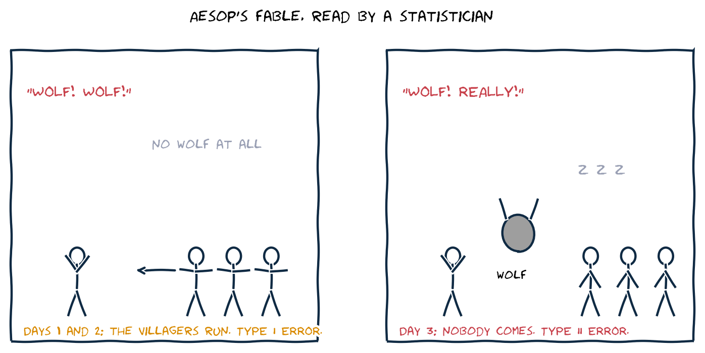
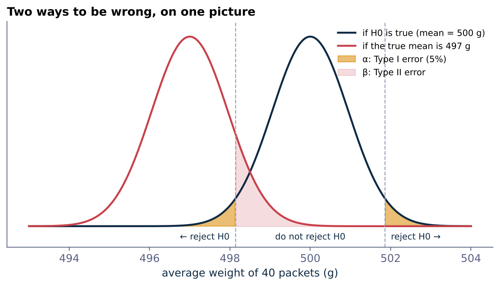
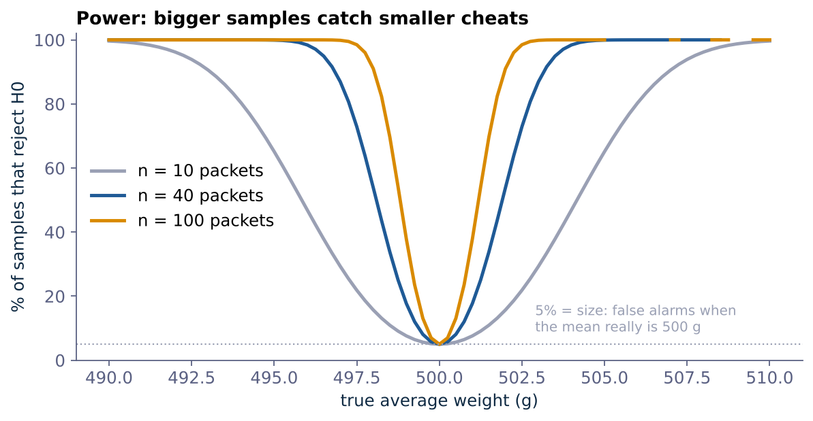

Innocent Until Proven Guilty: Why and How We Test Hypotheses
One afternoon in the 1920s, at the Rothamsted agricultural research station in England, a group of scientists sat down for tea. A woman named Muriel Bristol declined the cup she was offered. It had been poured the wrong way round, she said: the milk had gone in after the tea, and she could taste the difference.
A man at the table, a statistician named Ronald Fisher, did not laugh. He asked a better question: how would we know whether she can really tell? His answer to that question is the idea behind every p-value you will ever compute.
Part I · Getting Started · Chapter 1 of 2
1. Hypothesis testing · 2. The idea of regression · then on to Part II: Foundations
Data: blog_datasets.xlsx, sheet P0A_hypothesis · Simulated, 40 biscuit packets · EViews program
The lady tasting tea
Fisher designed an experiment. Prepare eight cups: four with milk poured first, four with tea poured first. Present them in random order. Tell the lady there are four of each, and ask her to pick the four milk-first cups.
Now the key step. Suppose she cannot taste any difference at all, and is simply guessing. How likely is it that she picks all four milk-first cups correctly by luck?
The number of ways to choose 4 cups out of 8 is
Only one of those 70 choices is completely right. So a pure guesser gets all eight cups right with probability 1/70 ≈ 0.014, about 1.4%.
If she does get them all right, we face a choice. Either she was extraordinarily lucky (a 1-in-70 event), or she really can taste the difference. Fisher's judgement: that is unlikely enough to doubt the "pure guessing" story.
According to H. Fairfield Smith, a colleague of Fisher, she identified all eight cups correctly. Fisher described the experiment in his 1935 book The Design of Experiments, and it became the most famous cup of tea in the history of science.
Notice the logic, because it is the logic of every test:
- Start with a boring assumption: she is guessing. This is the null hypothesis, \(H_0\).
- Ask how surprising the evidence would be if the boring assumption were true. This is the p-value.
- If it would be very surprising, reject the boring assumption.
Fisher put it beautifully: the null hypothesis is never proved, but it may be disproved by the experiment.
The courtroom
The best way to understand hypothesis testing is a court of law.
| Court | Hypothesis test |
|---|---|
| The accused is presumed innocent | We assume \(H_0\) is true |
| The prosecution brings evidence | We collect data |
| Guilty only if proved beyond reasonable doubt | Reject \(H_0\) only if the evidence is very unlikely under \(H_0\) |
| "Not guilty" does not mean "innocent" | "Do not reject \(H_0\)" does not mean "\(H_0\) is true" |
That last row matters enormously. A court that says "not guilty" has not declared the person innocent; it has said the evidence was not strong enough. In the same way, "we cannot reject \(H_0\)" means only that the data were not strong enough to throw it out. The Unit Root Series on this blog is full of examples where this distinction is the whole story.
Two ways to be wrong
A court can make two kinds of mistake, and so can a test.
| Truth: innocent (\(H_0\) true) | Truth: guilty (\(H_0\) false) | |
|---|---|---|
| Verdict: guilty (reject \(H_0\)) | Type I error: an innocent person jailed. Probability \(\alpha\) | Correct. Probability \(1-\beta\) = power |
| Verdict: not guilty (do not reject) | Correct | Type II error: a guilty person walks free. Probability \(\beta\) |
The eighteenth-century English judge William Blackstone wrote that it is better that ten guilty persons escape than that one innocent suffer. In our language: Type I errors are worse, so keep \(\alpha\) small, even at the cost of more Type II errors. That is why tests fix the significance level at 5% or 1% and accept whatever \(\beta\) follows.
The names "Type I" and "Type II", and the whole framework of controlling \(\alpha\) and maximising power, come from Jerzy Neyman and Egon Pearson (son of Karl Pearson) in 1933. Fisher hated their approach and said so in print for years. The two camps' feud is one of the great quarrels of science, and today's textbooks quietly teach a blend of both.
Classic examples of the two errors

- The boy who cried wolf. Aesop told the whole story 2,500 years ago. On the first days, the villagers believe a false alarm and run up the hill: a Type I error. On the last day, a real wolf comes, and the villagers ignore the alarm: a Type II error. Making too many Type I errors had made them so cautious that they committed the more costly Type II error.
- The smoke alarm. A very sensitive alarm goes off every time you make toast (Type I). An insensitive one stays silent during a real fire (Type II). You can't eliminate both; you choose your trade-off.
- The cricket umpire. Under the old rules, the batsman was "not out" unless the umpire was sure: the null hypothesis is "not out". Giving out a batsman who wasn't (Type I) was considered worse than missing a genuine LBW (Type II). Hence "the benefit of the doubt goes to the batsman".
- The medical test. A COVID test that says "positive" for a healthy person is a false positive (Type I). One that says "negative" for an infected person is a false negative (Type II). For screening a disease, doctors often worry more about Type II.
The mathematics in one line
Suppose we want to test whether a population mean \(\mu\) equals some value \(\mu_0\). Take a sample of \(n\) observations with mean \(\bar x\) and standard deviation \(s\). The t-statistic measures how far the sample mean is from \(\mu_0\), in units of its standard error:
Where does this come from? (click to open)
If the observations are independent with mean \(\mu\) and variance \(\sigma^2\), the sample mean \(\bar x\) has mean \(\mu\) and variance \(\sigma^2/n\). So under \(H_0: \mu = \mu_0\),
is approximately standard normal (exactly so if the data are normal). We don't know \(\sigma\), so we replace it by the sample standard deviation \(s\). That extra uncertainty turns the normal into Student's t distribution with \(n-1\) degrees of freedom: a slightly fatter-tailed bell. ("Student" was the pen name of William Gosset, who worked for the Guinness brewery in Dublin; Guinness did not let its staff publish under their own names.)
If \(|t|\) is large, the sample mean is far from \(\mu_0\) in standard-error units, and the data are hard to square with \(H_0\). The p-value is the probability, if \(H_0\) were true, of getting a \(|t|\) at least as large as the one we observed.
The data: are the biscuit packets short?
A consumer group suspects that a brand's "500 g" biscuit packets weigh less than they should. They buy 40 packets and weigh each one. The sheet P0A_hypothesis has the weights.
First, look at the data: open WEIGHT, View → Descriptive Statistics & Tests → Stats Table.
WEIGHT
Mean 497.1800
Median 497.4500
Maximum 513.4000
Minimum 479.5000
Std. Dev. 6.954622
Skewness 0.003649
Kurtosis 3.483572
Jarque-Bera 0.389826
Probability 0.822906
Sum 19887.20
Sum Sq. Dev. 1886.3040
Observations 40
The average is 497.2 g, and 27 of the 40 packets weigh less than 500 g. Suspicious, but some packets weigh more (up to 513.4 g). Could a 2.8 g shortfall be just bad luck in which 40 packets were bought?
Now the test: View → Descriptive Statistics & Tests → Simple Hypothesis Tests, mean = 500.
Hypothesis Testing for WEIGHT
Date: 10/27/26 Time: 21:45
Sample: 1 40
Included observations: 40
Test of Hypothesis: Mean = 500.0000
Sample Mean = 497.1800
Sample Std. Dev. = 6.954622
Method Value Probability
t-statistic -2.564517 0.0143
Let's check it by hand: \(s/\sqrt{n} = 6.95/\sqrt{40} = 1.10\), and \(t = (497.18 - 500)/1.10 = -2.56\).
The p-value is 0.0143. If the packets really averaged 500 g, a sample average this far from 500 would turn up only 1.4% of the time. That is very nearly the lady's 1-in-70. At the 5% level we reject \(H_0\): the packets are short.
A 95% confidence interval tells the same story more usefully: \(497.18 \pm 2.02 \times 1.10\), or 494.96 g to 499.40 g. The value 500 is outside it. (A two-sided test at 5% rejects exactly when the hypothesised value falls outside the 95% interval.)
Size and power, pictured

The dark curve shows where the average of 40 packets would fall if \(H_0\) were true. The orange tails, 2.5% on each side, are where we would reject anyway: \(\alpha\), the Type I error. The red curve shows where the average would fall if the true mean were 497 g. Its pink part falls inside the "do not reject" zone: \(\beta\), the Type II error.
How often does this test catch a 3 g shortfall? It depends on how many packets we weigh:

| Packets weighed | Chance of detecting a true mean of 497 g (power) |
|---|---|
| 10 | 29% |
| 40 | 87% |
| 100 | 99.9% |
When I simulated 20,000 samples of 40 packets with a true mean of exactly 500 g, the test rejected 5.1% of the time: the size is what it promises. With a true mean of 497 g, it rejected 87% of the time. More data buys power, which is why a small study that "finds no effect" proves very little.
Three warnings
- "Statistically significant" is not "important". With a million packets, a shortfall of 0.01 g would be "highly significant". Nobody's tea party is ruined by 0.01 g. Always ask how big the effect is, not only whether it is zero.
- A p-value is not the probability that \(H_0\) is true. It is the probability of data this extreme if \(H_0\) were true. The American Statistical Association issued a whole statement on p-values in 2016 to remind scientists of this.
- Test many things and something will be "significant". Twenty independent tests at 5% will, on average, produce one false alarm even when nothing is going on. Searching until you find p < 0.05 has a name: p-hacking.
The lesson
A hypothesis test is a structured way of being sceptical. Assume nothing interesting is happening, ask how surprising your data would be, and only then decide. Remember the court: "not guilty" is not "innocent", and every verdict risks one of two errors.
Something to think about
The biscuit company replies: "Our machines are set to 500 g; a few light packets are normal." Write down the null hypothesis the company would like to defend. If the consumer group had weighed only 10 packets and found the same average of 497.2 g, what do you think the p-value would have been: larger or smaller? Why? Leave your answer in the comments.